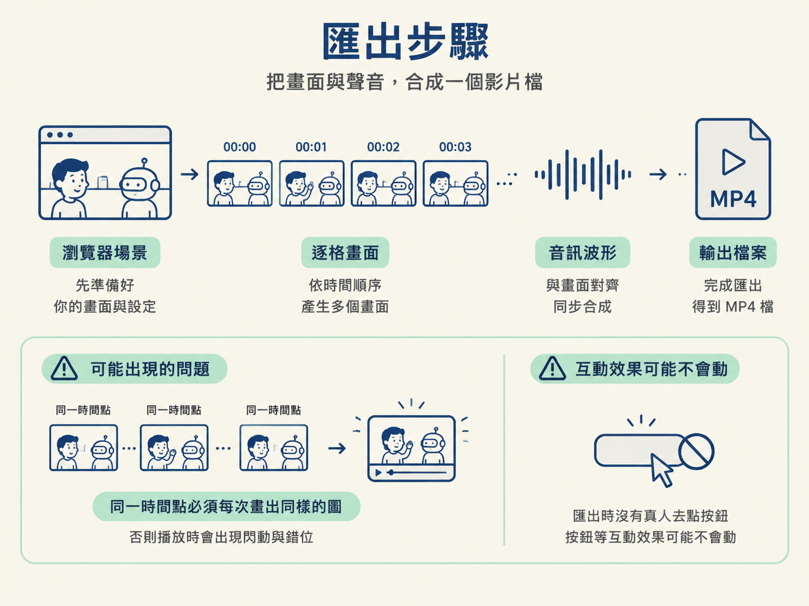
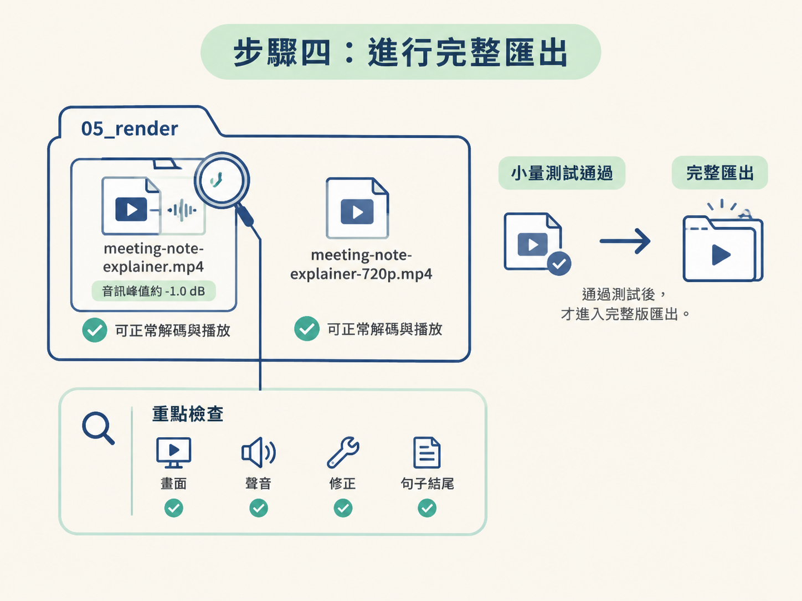

這一步的目標，是把已經確認過的瀏覽器預覽，變成別人可以直接打開的 MP4 檔案。你會先讓 AI 做一次小量測試，再由你在播放器裡檢查真正的影片；確認畫面、聲音和修正都正確後，才進行完整匯出。
動手前，請先確認上一課的預覽已經用靜格和播放驗收過。這次的輸入，是一支修正已確認有效的預覽；最後的產出則是主要 MP4 和一份較小的副本。
如果上一課的修正還沒有確認，就先回去處理，不要急著匯出。匯出可能需要時間，用一個尚未定案的畫面去產生大檔案，就像還沒檢查草稿便直接印成海報，出了問題又得全部重來。
在按下匯出之前，先請 AI 說清楚這個 workspace 的匯出方式。你要確認它真的知道如何把場景產成可播放的影片，而不是只有資料夾和一堆看似相關的檔案。
匯出時，workspace 會在影片的每一個時間點，把瀏覽器裡的場景畫成一張張畫面，再把這些畫面和音訊合成影片檔。也因此，同一個時間點每次都必須畫出一樣的圖；否則影片重跑時可能出現閃動或錯位。
如果 Sam 和 Friday 的場景有「點下去才動」或「依真實時間計時」的效果，請先問 AI：這個效果在匯出時會變成什麼樣子？匯出過程中沒有真人去點按鈕，因此這類效果可能根本不會動。

在 Windows 上，課程示範的 render 指令要從 workspace 根目錄執行，並使用通過 1.3 檢查的 Python 環境。若使用 macOS 或 Linux，則改用你設定好的環境中的 Python，但要帶上相同的 anim.py render 參數。
兩種做法都應該產出主要的 MP4，以及一份較小的副本。如果是自己從零建立的環境，請使用你實際測試過的匯出方法。只有在 AI 示範出確實能產生、也能播放的檔案時，才算完成這項確認。
python anim.py render meeting-note-explainer --phone --workers 1這是本次示範實際使用的 render 指令。最後的參數會把輸出設定成手機比例，並限制使用單一 worker。請把這行指令保存下來，下一課還會用到。
第一次匯出時，不要直接做完整版。先請 AI 用短一點、速度快一點的方式跑測試，確認整條匯出管線能產生可播放的檔案。
先跑一次小量測試匯出，讓我看到一個可以播放的檔案，
並把這次用的指令、輸出檔名和設定一起記下來。這次示範的測試結果約為 27.9 秒、1920×1080、每秒 30 格，共 837 格畫面。測試成本較低，若有問題也比較容易重跑。
測試檔產生後，請用影片播放器打開被存下來的 MP4，不要只看瀏覽器中的預覽。預覽是工作檯，MP4 才是別人最後拿到的成品；工作檯看起來正常，不代表成品一定正常。
由你負責檢查以下三件事：
如果這三項都正確，才表示小量測試通過，可以進入完整匯出。
如果 MP4 和瀏覽器預覽不一樣，不要只回報「匯出的壞掉了」。請先找出兩者第一個不同的時刻，再把那個時間點告訴 AI。這樣 AI 才能針對具體畫面，比較匯出器和設定到底從哪裡開始產生差異。
匯出的 MP4 和瀏覽器預覽在［說出第一個不同的時間點］開始不一樣，
請比較那個時間點的匯出畫面與瀏覽器畫面，
檢查匯出器和設定，然後開一個新的短測試檔給我看。接著由 AI 修正問題並重新產生短測試檔；由你再次打開檔案檢查。若短測試仍不一致，就重複這個修正與檢查流程。只有短測試通過後，才進行完整版，避免問題拖到最後才被發現。
確認小量測試沒有問題後，請 AI 做完整匯出。這次示範會產生以下兩個檔案：
05_render/meeting-note-explainer.mp4，音訊峰值約為 -1.0 dB。05_render/meeting-note-explainer-720p.mp4。完整匯出完成後，兩個檔案都應該能正常解碼和播放。請至少打開主要 MP4，再次確認畫面、聲音、修正和句子結尾都沒有問題。

完成這一步後，你手上會有一個可以在播放器中打開的 MP4：畫面與聲音同步，上一課的修正仍在，句子結尾也完整。你也應該保存這次成功使用的 render 指令，以及測試檔和完整檔案的名稱。
請記住這個操作順序：先小量測試，再用播放器檢查真正的 MP4；若預覽和匯出不一致，就回報第一個分歧點；修好短測試後，才做完整匯出。
匯出會把瀏覽器場景在每個時間點畫成一張張畫面，再跟音訊合成，所以同一個時間點必須每次畫出同樣的圖。標準順序是：先小量測試、在播放器打開真正的 MP4 檢查、遇到預覽與匯出不一致就回報第一個分歧點、修好短測試後才做完整匯出。
現在你已經有一個播得出來的檔案，但讓它成功產生的指令，還只是「剛才那次」使用的設定。下一課會把這行指令和修改註記留在專案裡，讓這個匯出結果變成可以重現的資產。